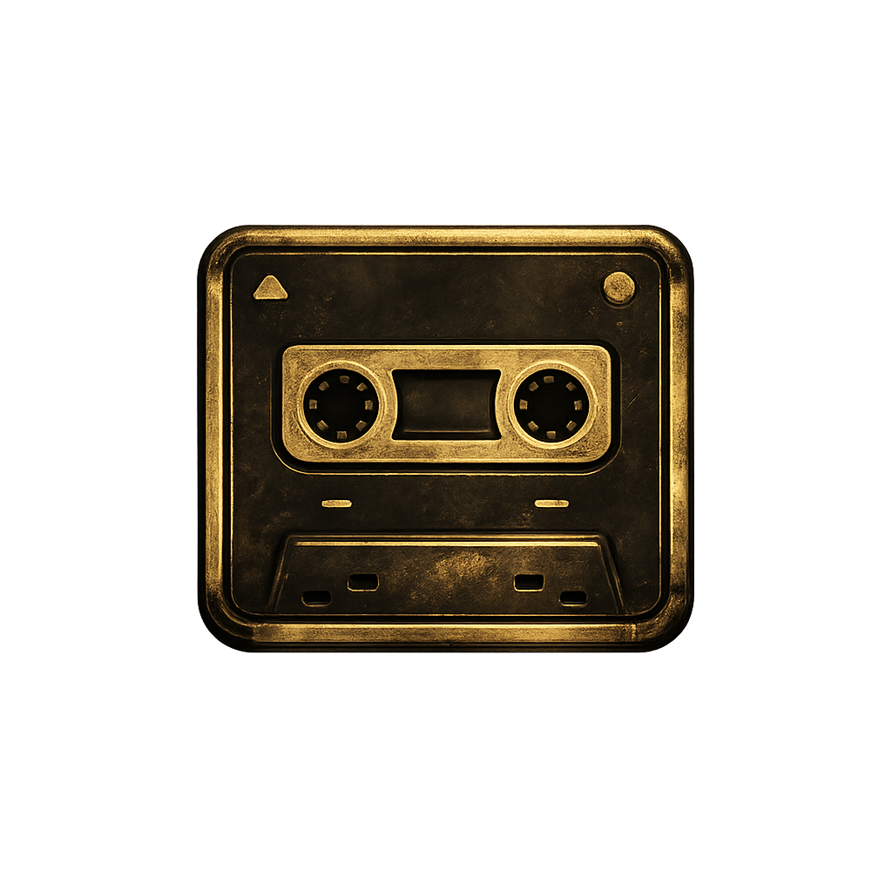
Aktuelle Episoden
– Episoden
Alle derzeit verfügbaren Folgen des Philip-Maloney-Hörspiels.
Inoffizieller RSS-Feed für das Krimi-Hörspiel von SRF.
Dieses Projekt ist ein inoffizielles Fanprojekt und steht in keiner offiziellen Verbindung zu SRF.
https://irwitzer.github.io/PhilipMaloney-feed/feed.xml

– Episoden
Alle derzeit verfügbaren Folgen des Philip-Maloney-Hörspiels.
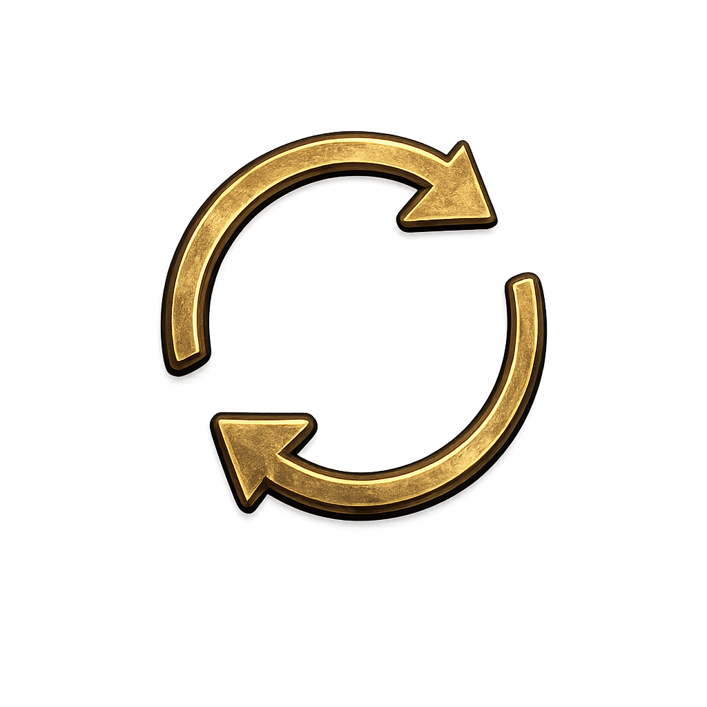
Der Feed wird automatisch geprüft und bei neuen Folgen erweitert.
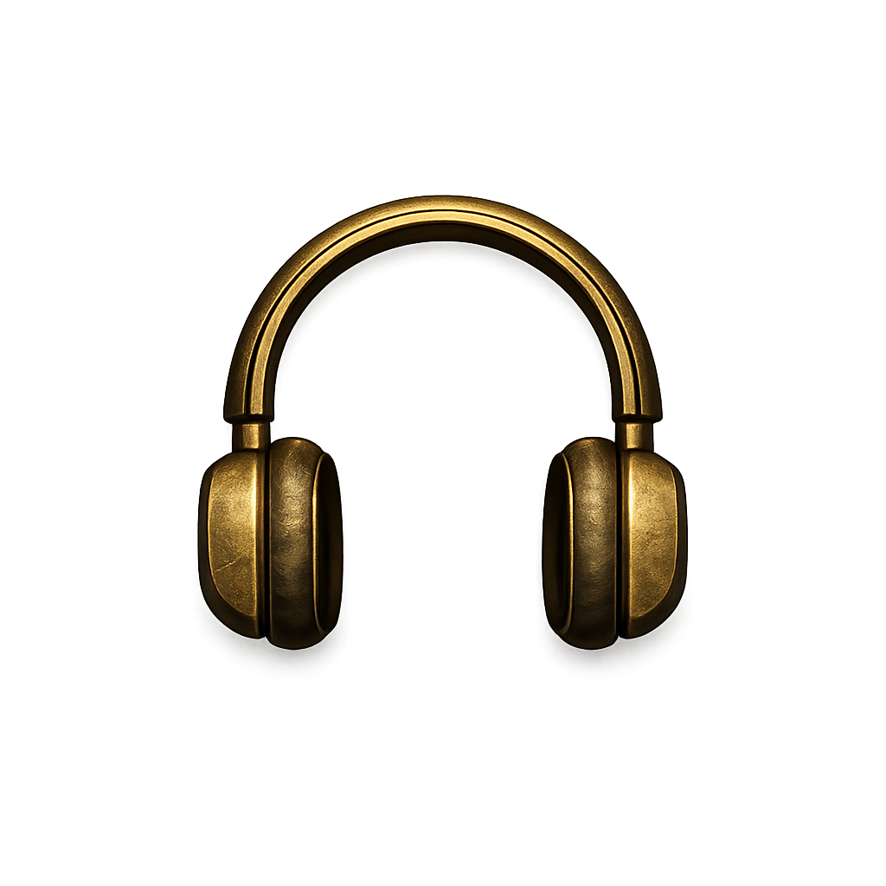
Alle verfügbaren Philip-Maloney-Folgen direkt auf der offiziellen SRF-Seite.
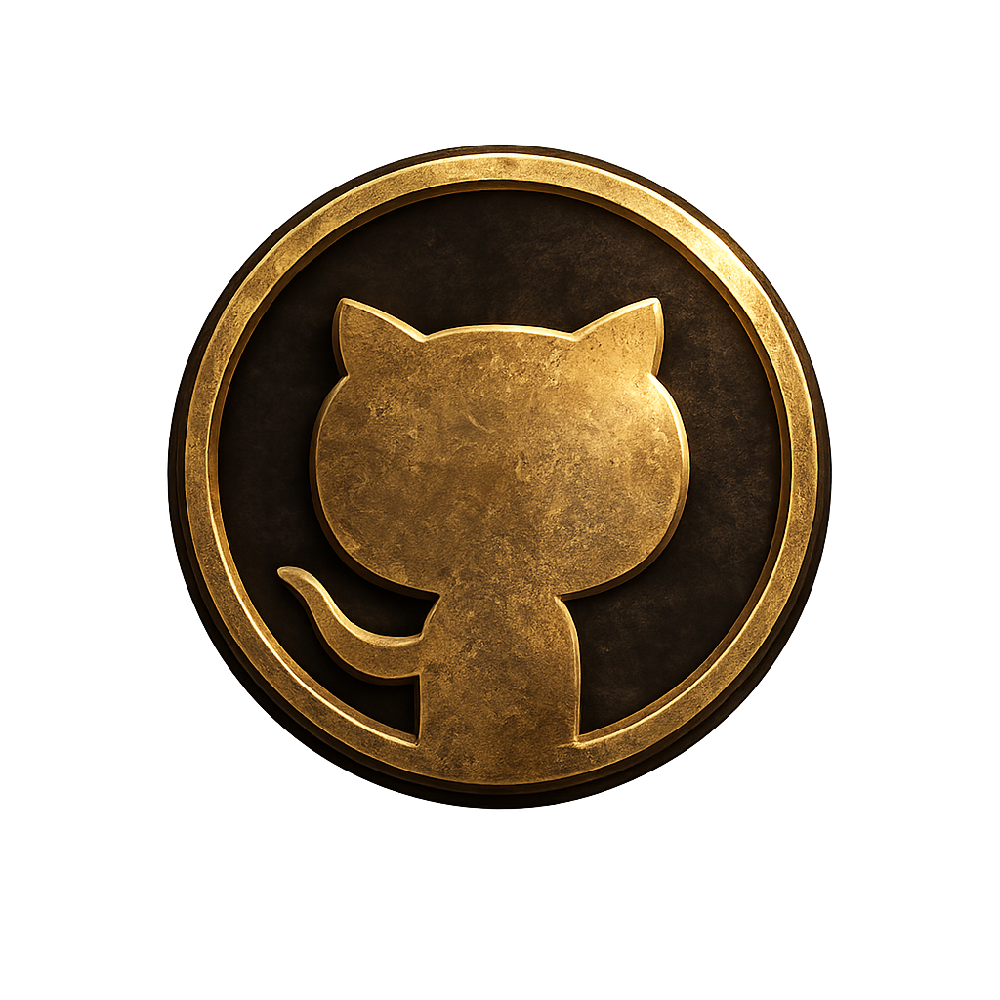
Offen, transparent und zuverlässig über GitHub Pages bereitgestellt.
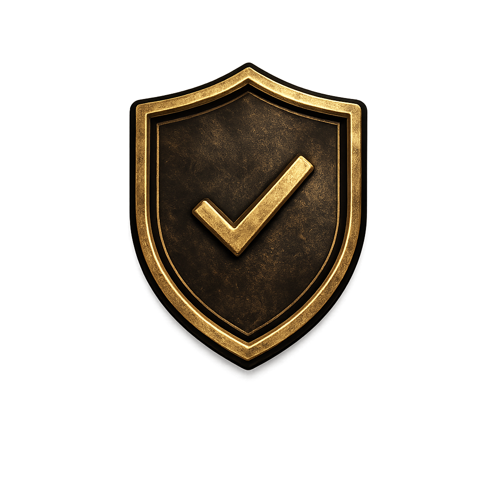
Jeder neue Feed wird vor der Veröffentlichung technisch geprüft.
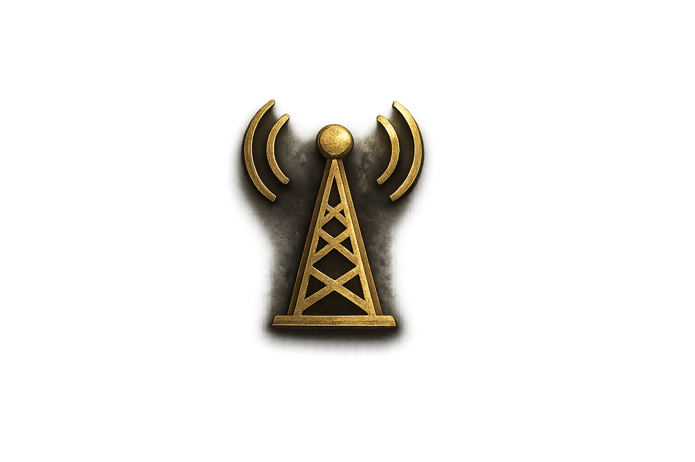
Der Feed verlinkt ausschließlich auf öffentlich erreichbare Audioressourcen von SRF. Es werden keine Audiodateien gespeichert.
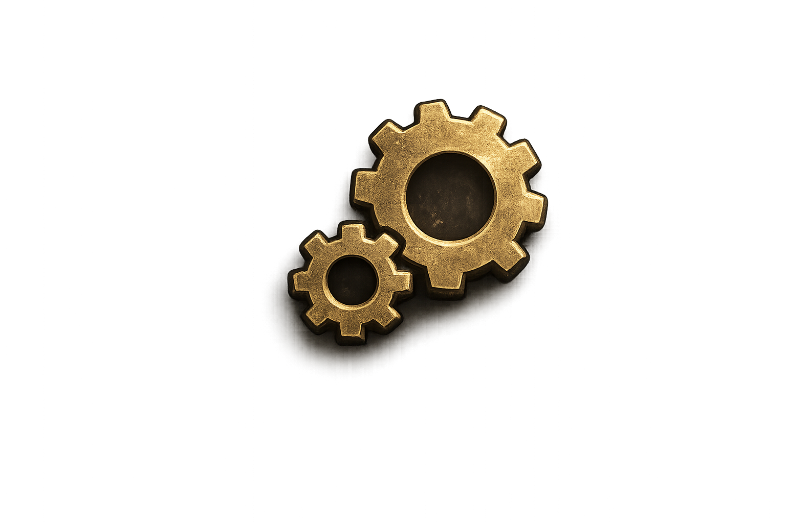
Ein täglicher GitHub-Workflow prüft die aktuellen Episoden, ergänzt neue Folgen und entfernt nicht mehr verfügbare Einträge.
Kopiere die Feed-Adresse in deine bevorzugte Podcast-App oder einen RSS-Reader und höre die Folgen bequem dort.
Neu im Feed
Die neuesten Episoden werden geladen …
Mitwirkende
Die Menschen und die Redaktion hinter den haarsträubenden Fällen des Philip Maloney.
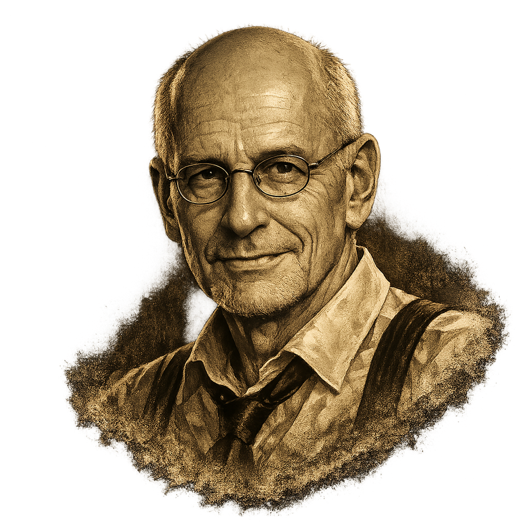
Autor und Schöpfer
Roger Graf erfand Philip Maloney und prägte die Hörspielserie über Jahrzehnte als Autor und Produzent. Sein Tonfall, sein Humor und seine Figuren haben den Charakter der Reihe entscheidend geprägt.
Mehr erfahren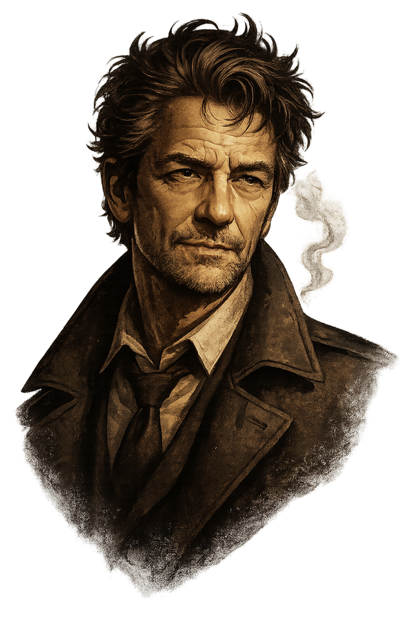
Philip Maloney
Michael Schacht war über viele Jahre die markante Stimme von Philip Maloney. Mit seiner trockenen, ruhigen Sprechweise machte er den eigensinnigen Privatdetektiv unverwechselbar.
Mehr erfahren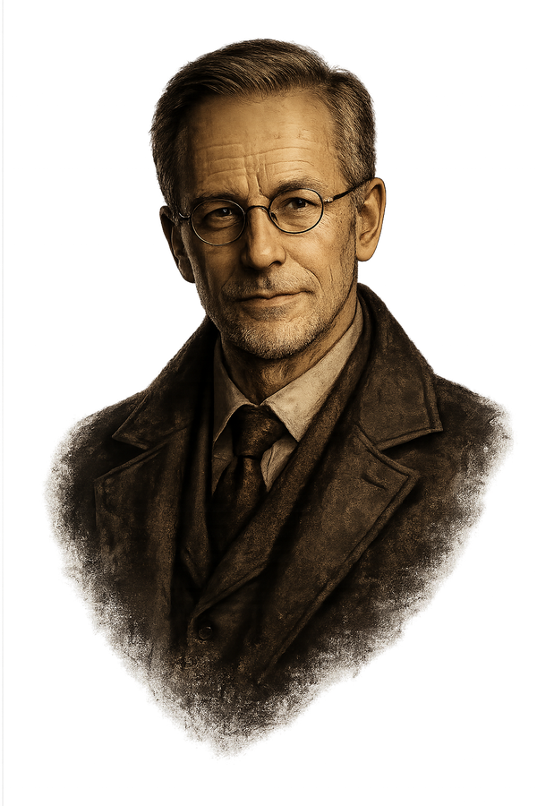
Der Polizist
Jodoc Seidel sprach den wiederkehrenden Polizisten und gehört damit zu den vertrauten Stimmen der Serie. Seine Auftritte setzen einen wunderbar eigensinnigen Gegenpol zu Maloneys Gelassenheit.
Mehr erfahren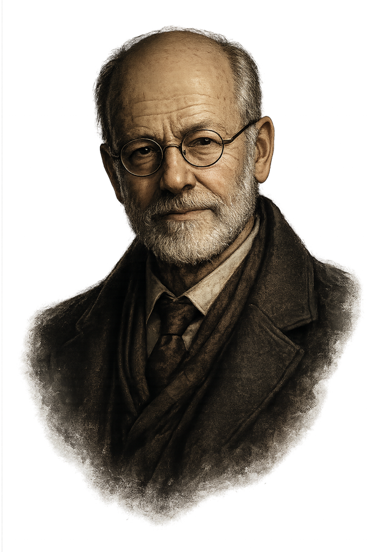
Erzählstimme
Peter Schneider führte als Erzählstimme durch die Fälle und verlieh den Episoden zusätzliche Atmosphäre. Seine markante Stimme ist ein fester Teil der besonderen Maloney-Klangwelt.
Mehr erfahrenOriginalproduktion
SRF ist die Heimat von Maloney und gibt aussergewöhnlichen Hörspiel- und Radioproduktionen über viele Jahre Raum. Diese Beständigkeit, die sorgfältige Produktion und die öffentlich zugänglichen Audioangebote machen es möglich, dass die Fälle bis heute gehört und neu entdeckt werden können.
Mehr erfahren